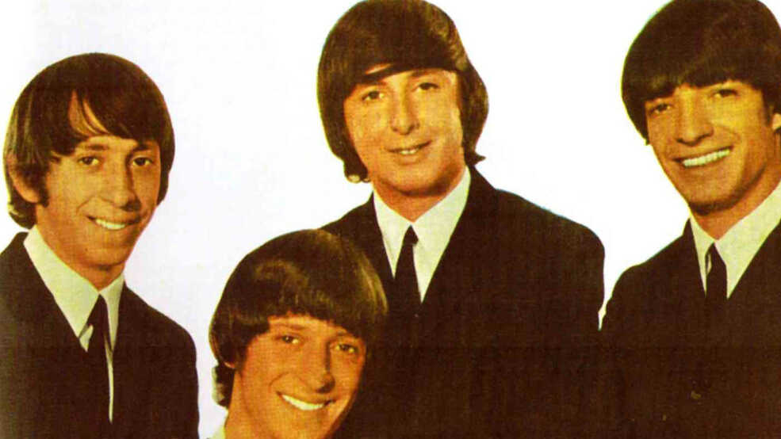

Los Shakers
Los Shakers fue una banda uruguaya de rock and roll formada en la ciudad de Montevideo a principios de los años 60. Fueron una de las primeras bandas en tocar rock en español en América Latina y se convirtieron en una importante influencia para el desarrollo del rock en español en la región.
La banda estaba compuesta por los hermanos Hugo y Osvaldo Fattoruso en guitarra y batería, respectivamente, y por Roberto "Pelín" Capobianco en bajo. Su música era una mezcla de rock and roll, beat y rhythm and blues, con letras en español que hablaban sobre el amor, la libertad y la juventud.
Los Shakers tuvieron un gran éxito en Uruguay y Argentina durante la década de los 60. Su estilo de vestir y su apariencia, inspirada en la banda británica The Beatles, también se convirtió en un referente para los jóvenes de la época.
Algunos de sus temas más conocidos incluyen "Break It All", "Siempre Tú" y "La Conferencia Secreta del Toto's Bar". También grabaron varios discos, como "La Conferencia Secreta del Toto's Bar" y "Shakers for You", entre otros.
A pesar de su corta carrera, Los Shakers dejaron una huella importante en la música latinoamericana. Su influencia se puede ver en bandas posteriores como Los Abuelos de la Nada, Los Enanitos Verdes y Soda Stereo, entre otras. Además, su legado ha sido reconocido por muchos músicos y críticos de la música como una de las bandas más importantes y originales del rock en español.